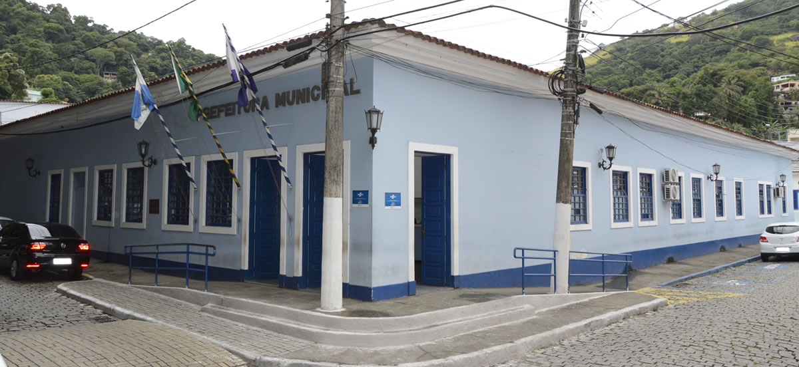

Autarquias
O que são Autarquias?
As autarquias são entidades da administração pública indireta, criadas por lei específica, com personalidade jurídica, patrimônio próprio e atribuições específicas. Têm autonomia administrativa e financeira. Seus dirigentes são nomeados pelo poder executivo e suas contas são submetidas ao Tribunal de Contas (Fonte: Wikipedia).
Possuem praticamente as mesmas atribuições da administração direta, mas diferem da União, Estados e Municípios por não terem capacidade política, ou seja, o poder de criar o próprio direito.
Na estrutura da Prefeitura de Mangaratiba, estão presentes três autarquias: Fundação Mario Peixoto, Instituto José Miguel Olympio Simões e Instituto de Previdência de Mangaratiba.
A Fundação Mario Peixoto (FMP) é uma entidade cultural de caráter privado, instituída em 29 de dezembro de 1986 (Lei nº. 105) pela Prefeitura de Mangaratiba. Está vinculada administrativamente à Secretaria de Gabinete da Prefeitura, cujo titular tem assento permanente, como Presidente, no Conselho Curador da Instituição. Em razão disso, é ela a gestora e executora da política oficial de cultura em Mangaratiba.
O Instituto José Miguel Olympio Simões, órgão social da prefeitura de Mangaratiba, tem como objetivo atender as famílias que se encontram em estágio de vulnerabilidade social, por meio de diversas ações que visam amenizar algumas dessas dificuldades.
O Instituto de Previdência do Município de Mangaratiba (Previ) tem como função principal cuidar e atender diretamente os anseios dos servidores públicos municipais que se aposentam de suas atividades laborais, como também dos pensionistas e dos inativos.
Clique abaixo e conheça mais sobre as três autarquias municipais.
A Fundação Mário Peixoto tem como objetivo administrar, planejar, recuperar, restaurar e propugnar pela conservação e utilização do Patrimônio arqueológico, histórico, turístico, arquitetônico, cultural, paisagístico, científico e ecológico do Município de Mangaratiba.

O Instituto José Miguel Olympio Simões, órgão social da prefeitura de Mangaratiba, tem como objetivo atender as famílias que se encontram em estágio de vulnerabilidade social, por meio de diversas ações que visam amenizar algumas dessas dificuldades.
É uma autarquia que tem como objetivo principal a garantia de Aposentadoria e Pensão aos seus segurados (servidores efetivos) do município de Mangaratiba.